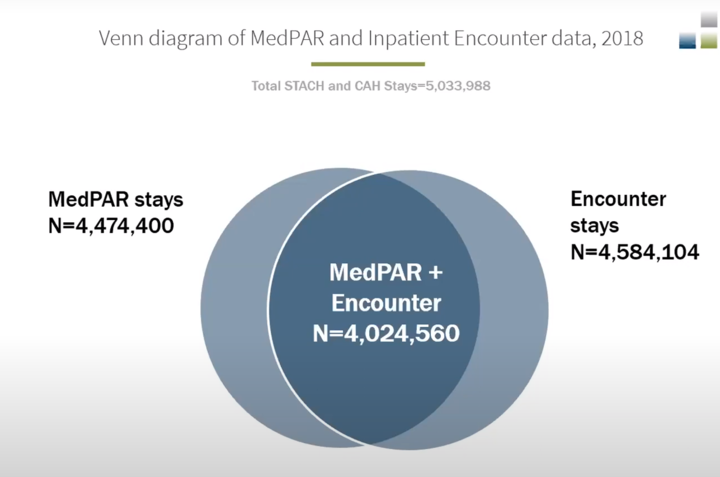

Medicare Fee-For-Service (1999 - present)
The Medicare Fee-For-Service (FFS) data available through the Chronic Conditions Warehouse (CCW) encompass a comprehensive set of Medicare administrative data from January 1, 1999, forward. These data include institutional and non-institutional claims, assessment data, and enrollment/eligibility information. The data are designed to support a variety of research objectives and can be used to analyze healthcare utilization, costs, and outcomes among Medicare beneficiaries.Medicare FFS Data Files:
- Master Beneficiary Summary File (MBSF): An annual person-level summary file containing demographic, entitlement, and enrollment data for beneficiaries enrolled in Medicare during the reference year. The MBSF includes segments for Chronic Conditions, Other Chronic or Potentially Disabling Conditions, Cost and Use summaries, and more. MBSF Documentation
- Inpatient (IP) Claims: Data from inpatient hospital stays, including diagnoses, procedures, Diagnosis Related Groups (DRGs), dates of service, reimbursement amounts, and provider information. Inpatient Claims Documentation
- Skilled Nursing Facility (SNF) Claims: Claims submitted by skilled nursing facilities, including diagnoses, dates of service, reimbursement amounts, and provider numbers. SNF Claims Documentation
- Home Health Agency (HH) Claims: Data on home health services, such as skilled nursing care, therapy services, diagnoses, dates of service, and reimbursement amounts. Home Health Claims Documentation
- Hospice Claims: Claims for hospice services, including levels of care, terminal diagnoses, dates of service, reimbursement amounts, and provider numbers. Hospice Claims Documentation
- Outpatient (OP) Claims: Claims for outpatient services provided by institutional providers, including diagnoses, procedures (HCPCS codes), dates of service, reimbursement amounts, and revenue center codes. Outpatient Claims Documentation
- Carrier Claims: Data for non-institutional providers such as physicians and clinics, including diagnoses, procedures (HCPCS codes), dates of service, reimbursement amounts, and provider identifiers. Carrier Claims Documentation
- Durable Medical Equipment (DME) Claims: Claims submitted by DME suppliers for medical devices and supplies, including diagnoses, procedures (HCPCS codes), dates of service, reimbursement amounts, and supplier numbers. DME Claims Documentation
- Part D Prescription Drug Event (PDE) Files: Records representing prescription drug events under Medicare Part D, including drug specifics (NDC codes), quantities dispensed, and plan payment information. This is listed under FFS, but it also includes all of the MA Part D claims. Part D PDE Documentation
Medicare Advantage (2015 - present)
Medicare Advantage (MA), also known as Medicare Part C, offers an alternative to Original Medicare by allowing beneficiaries to enroll in privately managed care plans that provide Medicare Part A and Part B services. These plans include Health Maintenance Organizations (HMOs), Preferred Provider Organizations (PPOs), Private Fee-for-Service Plans (PFFS), and Special Needs Plans (SNPs).
Overview of MA Encounter Data Files:
- Inpatient (IP) Encounter File: Contains records of inpatient hospital stays, including diagnoses, procedures, dates of service, and provider information. Inpatient Encounter File Documentation
- Skilled Nursing Facility (SNF) Encounter File: Includes services furnished by skilled nursing facilities, such as therapy services and nursing care. SNF Encounter File Documentation
- Home Health (HH) Encounter File: Covers home health services, including skilled nursing care, physical therapy, and medical social services. Home Health Encounter File Documentation
- Outpatient (OP) Encounter File: Contains records of outpatient services provided by institutional providers like hospital outpatient departments and clinics. Outpatient Encounter File Documentation
- Carrier Encounter File: Includes services from practitioners such as physicians, nurse practitioners, and clinical social workers. Carrier Encounter File Documentation
- Durable Medical Equipment (DME) Encounter File: Contains data on durable medical equipment provided to beneficiaries. DME Encounter File Documentation
The MEDPAR file is a comprehensive inpatient hospital and skilled nursing facility (SNF) stay file. It includes data on all Medicare FFS inpatient and SNF claims, but it also has some claims from MA. In fact, it contains MA inpatient files that are otherwise not found in the encounter files (see this RESDAC Video Tutorial and attached image). MEDPAR File Documentation 
Medicaid MAX (1999 - 2015)
The Medicaid Analytic eXtract (MAX) files are comprehensive, person-level data files derived from the Medicaid Statistical Information System (MSIS). They provide detailed information on Medicaid enrollment, service utilization, and payments, supporting research and policy analysis.
Claims are included for fee-for-service Medicaid as well as Medicaid managed care for most files.
Overview of MAX Files with Individual Claims:
- Person Summary File (PS): Contains person-level information on Medicaid enrollees, including demographics, eligibility, and summarized utilization data. Personal Summary Documentation
- Inpatient Hospital File (IP): Includes records of inpatient hospital stays, covering diagnoses, procedures, and payment amounts. Inpatient Documentation
- Long Term Care File (LT): Contains data on services provided by long-term care facilities such as nursing homes and mental health institutions. Long Term Care Documentation
- Prescription Drug File (RX): Records prescription and over-the-counter drugs paid by Medicaid, including National Drug Codes (NDC), quantities, and payment information. Prescription Drugs Documentation
- Other Services File (OT): Includes data on outpatient services, physician visits, lab tests, durable medical equipment, and more. Other Services Documentation
- Medicaid Enrollee Supplemental File (MESF): Supplements the Person Summary file with chronic conditions (27 specific and 35 'other' chronic conditions) calculated using CCW algorithms applied to Medicaid claims. Notably, this type of file does not exist for the TAF years, and so researchers wanting those types of conditions have to code the relevant algorithms themselves. - MESF Documentation
Starting in 2014, the Centers for Medicare & Medicaid Services (CMS) began to transition from MSIS to the Transformed Medicaid Statistical Information System (T-MSIS). As a result, MAX data have been phased out as states converted their data submissions to the T-MSIS format. CMS now produces T-MSIS Analytic Files (TAF), which serve a similar purpose but are based on the newer T-MSIS data format, providing enhanced data quality and additional variables.
Medicaid TAF (2014 - present)
The Transformed Medicaid Statistical Information System (T-MSIS) Analytic Files (TAF) are the current format of Medicaid and CHIP data available for research purposes. TAF data replace the older MAX files and offer enhanced data quality, more comprehensive information, and more timely access to Medicaid and CHIP data.
Overview of TAF Files:
- Annual Demographic and Eligibility (DE) File: Contains person-level demographic information, enrollment details, and eligibility characteristics for all individuals enrolled in Medicaid or CHIP during the year. This file is the cornerstone for understanding the population covered by Medicaid and CHIP. DE File Documentation
- Inpatient Claims (IP) File: Includes records of inpatient hospital stays, providing detailed information on admissions, discharges, diagnoses, procedures, and payment amounts. Inpatient Claims Documentation
- Long-Term Care Claims (LT) File: Contains data on services provided by long-term care facilities, such as nursing homes, intermediate care facilities, and mental health institutions. Long-Term Care Claims Documentation
- Pharmacy Claims (RX) File: Records prescription and over-the-counter drugs covered by Medicaid or CHIP, including National Drug Codes (NDC), quantities, and payment information. Pharmacy Claims Documentation
- Other Services Claims (OT) File: Includes data on a wide range of outpatient services, physician visits, lab tests, durable medical equipment, home health services, and more. Other Services Claims Documentation
- Annual Managed Care Plan (APL) File: Contains information about each Medicaid and CHIP managed care plan or waiver entity operating during the year, including plan identifiers and characteristics. Managed Care Plan Documentation
- Annual Provider (APR) File: Contains information about providers eligible to render services to Medicaid and CHIP beneficiaries, including facilities, groups, and individual practitioners. Provider Documentation
There are six additional supplemental files available for the DE file outlined below, but they don't appear to have available documentation.
DE Supplemental Files:- Eligibility Dates: Provides enrollment spells with start and end dates.
- Managed Care Enrollment: Details monthly managed care enrollment information.
- Waiver Program Enrollment: Contains information on enrollment in waiver programs.
- Money Follows the Person (MFP): Provides data on participation in the MFP program.
- Health Home and State Plan Options (SPO): Includes information on health home participation and enrollment in state plan options.
- Disability and Need: Contains data on disability status, long-term services and supports (LTSS) eligibility, and other needs.
National Death Index (1999 - present)
Centers for Medicare & Medicaid Services provides the National Death Index (NDI) files only through the Virtual Research Data Center maintained by the Chronic Conditions Data Warehouse (CCW). As of October 2024, Medicare NDI files are available for 1999-2021 and Medicaid NDI files are available for 1999-2020. Medicaid NDI files, however, are not available for all states and years. In contrast to the enrollment files (Medicare Master Beneficiary Summary file, the Medicaid Analytic Extract Personal Summary file, and the Medicaid T-MSIS Analytic Demographic and Eligibility file) that contain only the death date, NDI files provide detailed information of the decedents such as date, state, and cause of death. The information is obtained through a linkage with official death certificate from the National Center for Health Statistics (NCHS). To facilitate the link, CCW first constructs a finder file that contains Medicare decedents for a given year and Medicaid decedents in any year recorded in the enrollment files. Then the finder file is sent to NCHS to obtain the detailed information about the decedents. Hence, while a Medicare NDI file for a given year contains only Medicare beneficiaries that were enrolled in Medicare in the year of the NDI file, a Medicaid NDI file for a given year contains all Medicaid beneficiaries ever enrolled in Medicaid up to the year and in the year of the NDI file.